AICA
An AI assistant that quietly whispers conversation prompts in real time, without you ever looking at your phone.
Official ACM DIS 2020 presentation video demonstrating real-time audio prompt flows and wearable interaction.
AICA: Artificial Intelligence Conversation Assistant
Arpit Bhatia, Meghna Gupta, Abhishek Gupta, and Nishtha Singhal. 2020. In Companion Publication of the 2020 ACM Designing Interactive Systems Conference (DIS' 20 Companion). Association for Computing Machinery, New York, NY, USA, 365–368.
Read Paper in ACM Digital LibraryThe Concept
What is AICA & Why Did We Build It?
Imagine meeting someone new at a social gathering, networking event, or date, and suddenly freezing up, unsure of what to say next or how to break an awkward silence. Looking down at your phone to check talking points breaks eye contact, creates social friction, and kills the organic flow of the moment.
AICA explores a discreet, hands-free alternative: a wearable AI that listens to spoken dialogue and provides subtle, private audio suggestions directly into your ear through everyday audio glasses, while you silently control the system with a gesture ring in your pocket.
Navigating emerging tech requires balancing innovation and usability. As the sole designer in a team of engineers, my focus was crafting a user-centric, detail-oriented solution for cutting-edge AI. Guided by Google's People + AI guidebook, I emphasized aligning tech advancements with user-friendly design principles.
User Scenario
How Someone Actually Uses AICA
To design an interface that respects real social etiquette, we anchored our exploration in a common human challenge: social anxiety when meeting someone new.
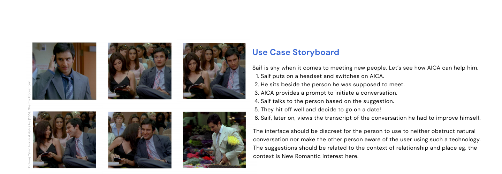
Use Case Storyboard: 1. Putting on the audio frames and launching AICA. 2. Joining the conversation naturally. 3. Receiving a subtle conversation starter via private audio. 4. Speaking without awkward pauses. 5. Building genuine rapport. 6. Reviewing conversation highlights later in the app.
Design Dilemma
Why Use AI for Conversations, and Where to Be Cautious?
Why AI?
- Relieves Anxiety: Prevents conversational freeze and awkward silences in unfamiliar social settings.
- Contextual Memory: Instantly connects past topics, mutual interests, and names on the fly.
- Adapts to Speech Pace: Grasps dialogue and suggests ideas regardless of fast speech or varied accents.
Why Not AI?
- Subpar Suggestions: Risk of generic, inappropriate, or robotic conversational prompts.
- Missing Body Language: NLP models struggle with nuanced facial expressions and physical gestures.
- Cognitive Dependency: Over-relying on automated prompts can weaken organic conversational confidence.
- Bot-to-Bot Conversations: If both speakers use the system, genuine human dialogue risks eroding.
Hardware & Ergonomics
The Physical Setup: Subtle Audio Output & Silent Gestures
To make the system unobtrusive, we chose lightweight, everyday form factors instead of bulky headsets:
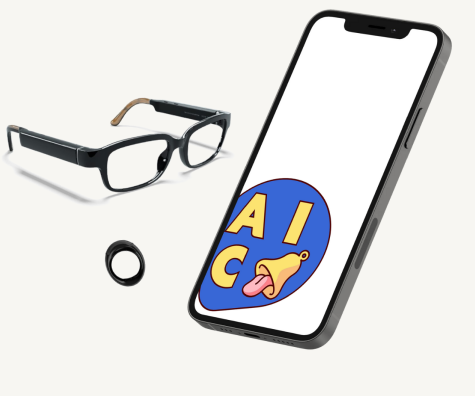
The AICA ecosystem: smart audio frames for subtle spoken prompts, a gesture ring for silent control, and a mobile app for setup and review.
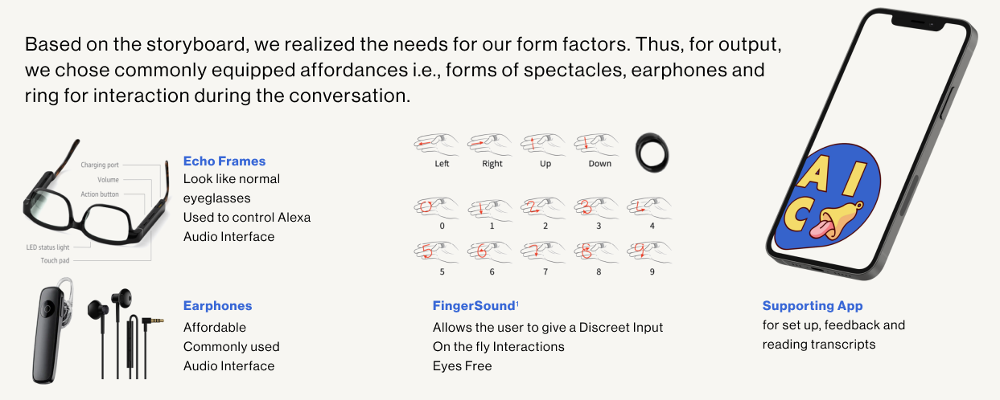
Hardware architecture: Audio frames for private spoken prompts, FingerSound contact-mic ring for silent thumb gestures, and companion mobile app.
Eyes-Free Interaction via FingerSound: Building on published HCI research (Zhang et al., ACM IMWUT 2017), the ring uses a miniature contact microphone to detect subtle unistroke thumb rubbing across fingers. This lets users dismiss, cycle, or accept audio suggestions with a tiny gesture inside their pocket, without lifting a finger or looking away.
System Logic
End-to-End User Flow: From Setup to Live Dialogue
The system balances three distinct modes: initial onboarding, the live conversation loop, and post-session reflection.
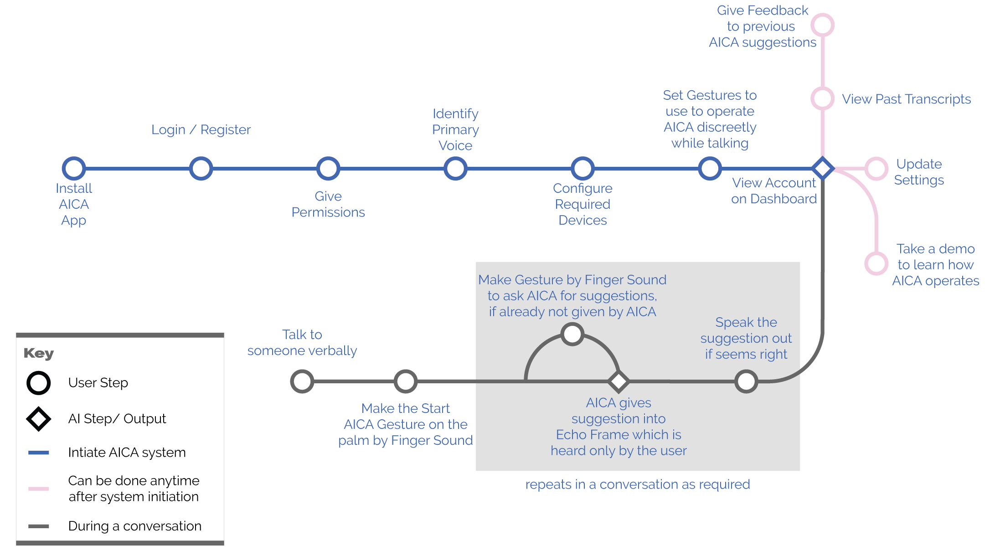
Complete system flow: Initial onboarding and voice calibration (blue line), live conversational prompting loop (grey line), and retrospective review & settings (pink line).
Human-Centered AI
5 Core UX Principles: Designing with Google PAIR
Conversational AI can easily overwhelm a speaker if poorly timed. Following Google's People + AI Guidebook, we established five foundational interaction principles:
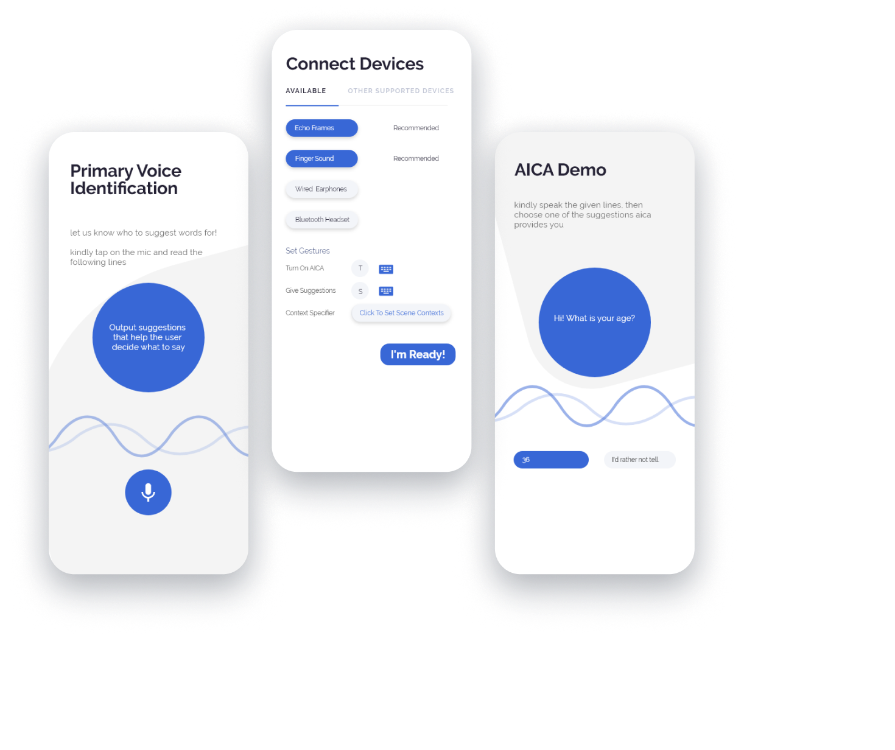
01 · Contextual Onboarding: Setting voice baselines, topic interests, and conversation sensitivity before entering social spaces.
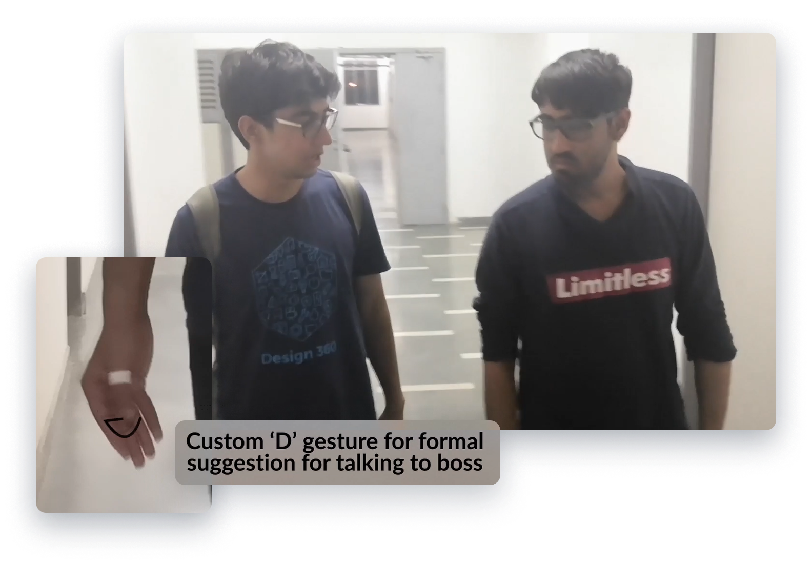
02 · Silent On-the-Fly Control: Using discreet thumb gestures on the ring to dismiss, cycle, or pause hints without breaking conversational rhythm.
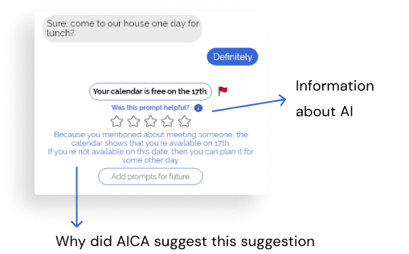
03 · Delayed Explainability (Key Finding): Whispering AI rationales mid-sentence caused cognitive stutter. We moved explanations to a post-session transcript review where users inspect why prompts were suggested.
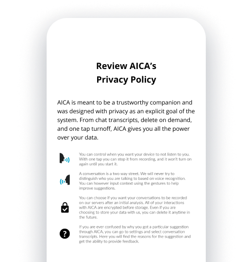
04 · Privacy & Data Sovereignty: Local on-device transcription, visible recording status, and a one-tap wipe that permanently clears conversation logs.
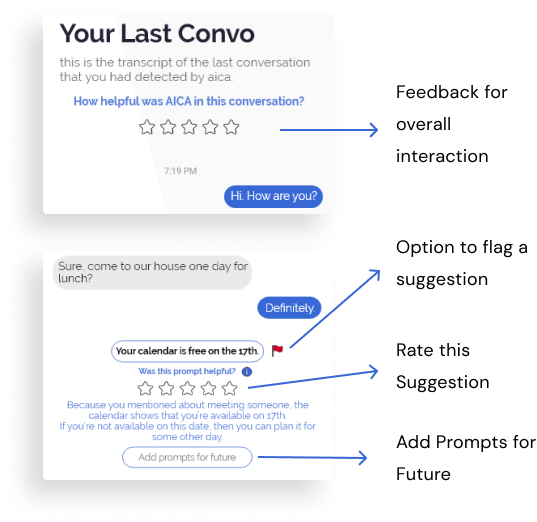
05 · Graceful Error Handling: Playing subtle haptic audio cues when model confidence drops or connectivity dips, ensuring the speaker is never left waiting.
User Testing & Iteration
What We Learned from Real User Conversations
To test how real people respond to wearable prompts during conversation, we ran Wizard of Oz testing with participants in a simulated scenario: a chance meeting with an old friend.
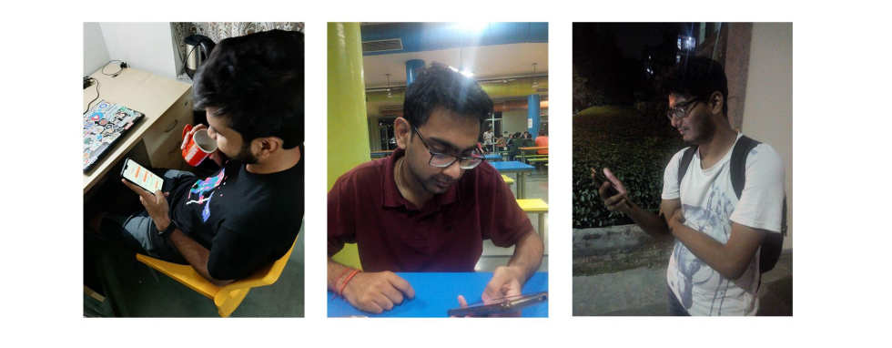
User study evaluation: Testing trust, explainability expectations, and conversational latency using Google PAIR worksheets.
Live testing surfaced two major usability breakthroughs:
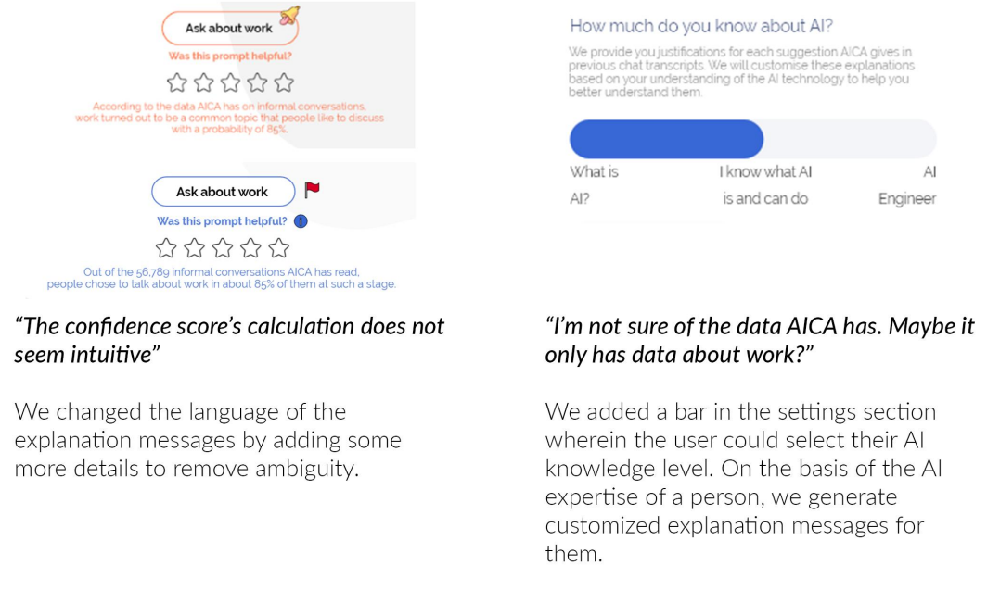
Iteration 01 · 1-Word Sparks: Full sentence audio prompts took too long to process and caused awkward pauses. We reduced prompts to 1–2 word conceptual sparks that the speaker can instantly adapt.
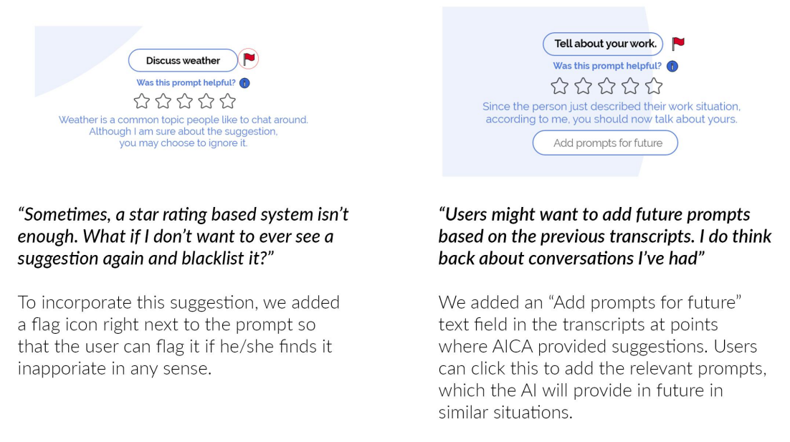
Iteration 02 · Post-Talk Audit: In-the-moment spoken explanations ("Why the AI suggested this") overwhelmed the speaker. We removed live explanations entirely, moving them to a post-session review.
Interactive Prototype
Companion Mobile App & Complete Screen Inventory
Try out the onboarding, live prompt monitoring, and transcript review in the interactive Figma prototype below:
Figma interactive companion app prototype: Explore onboarding, settings, and session review flows.
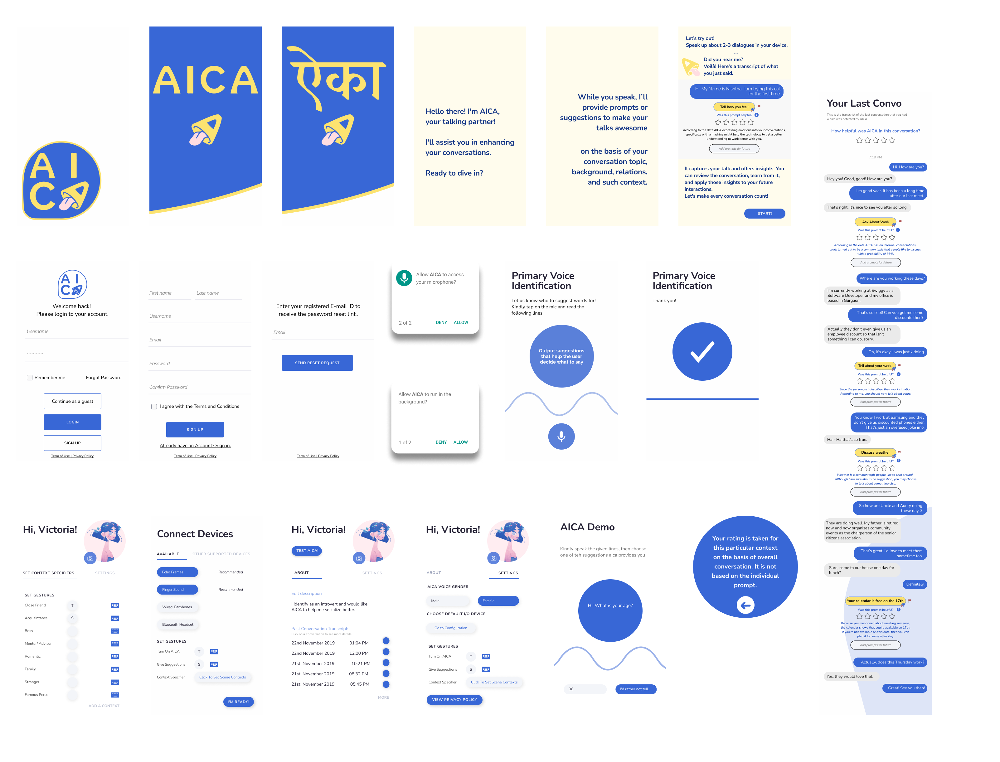
Complete mobile application screen system: Onboarding, device pairing, context selection, live monitoring, and transcript audit.
Process Archive
Deep Dive: Research, IA & Early Wireframes
For design leads and researchers interested in the methodology, explore the underlying research matrices, user interviews, journey maps, and low-fidelity wireframes:
Design Research & Process Archive Expand 7 Artifacts
1. Problem Area & Double Diamond Design Process
Mapping conversational barriers such as social anxiety, low confidence, and language differences, structured across Discover, Define, Develop, and Deliver phases.
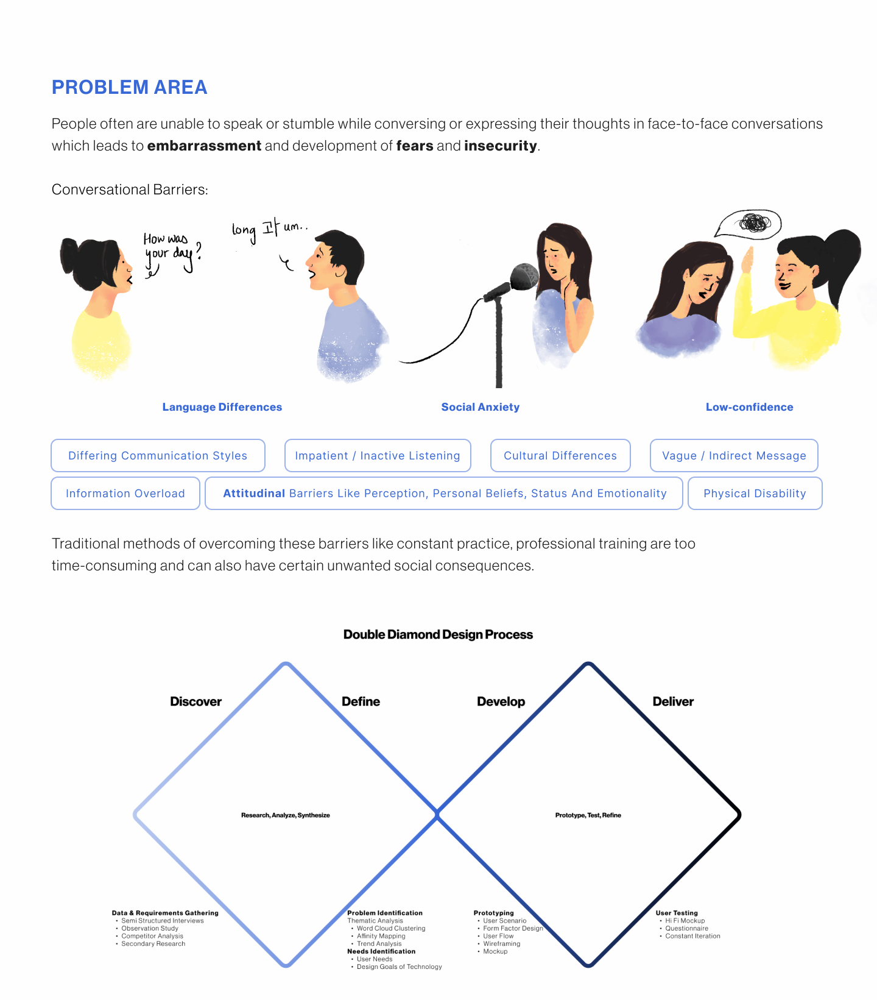
2. Secondary Research & Literature Review
Studying face-to-face communication inhibitions through clinical research papers (PubMed, ADAA), human-machine communication theory (Sherry Turkle), and prior conversational assistive tools.
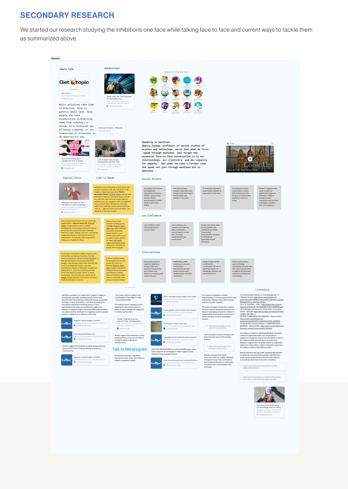
3. Primary Research & Thematic Affinity Mapping
Conducting semi-structured interviews with college students on conversational anxiety, clustering interview notes into thematic sticky groups, and synthesizing core user needs.
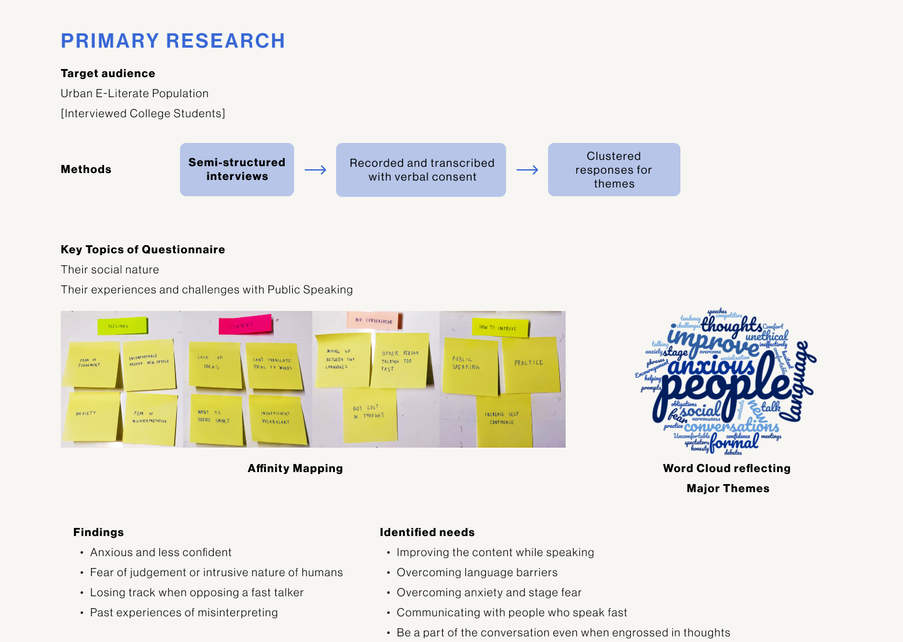
4. Conversation Dynamics & Observation Studies
Observing five-minute conversations between strangers versus pairs of friends to benchmark conversational cadence and pause lengths (averaging 3 to 5 seconds among strangers).
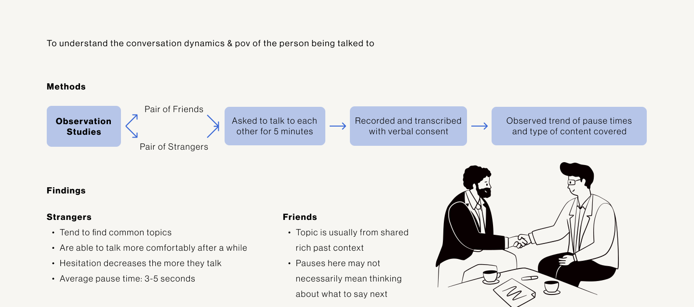
5. Existing Interventions & Market Landscape
Benchmarking speech coaching tools (LikeSo), small-talk prompt apps, and text prediction models (Gmail Smart Compose) to identify the gap for real-time spoken assistance.
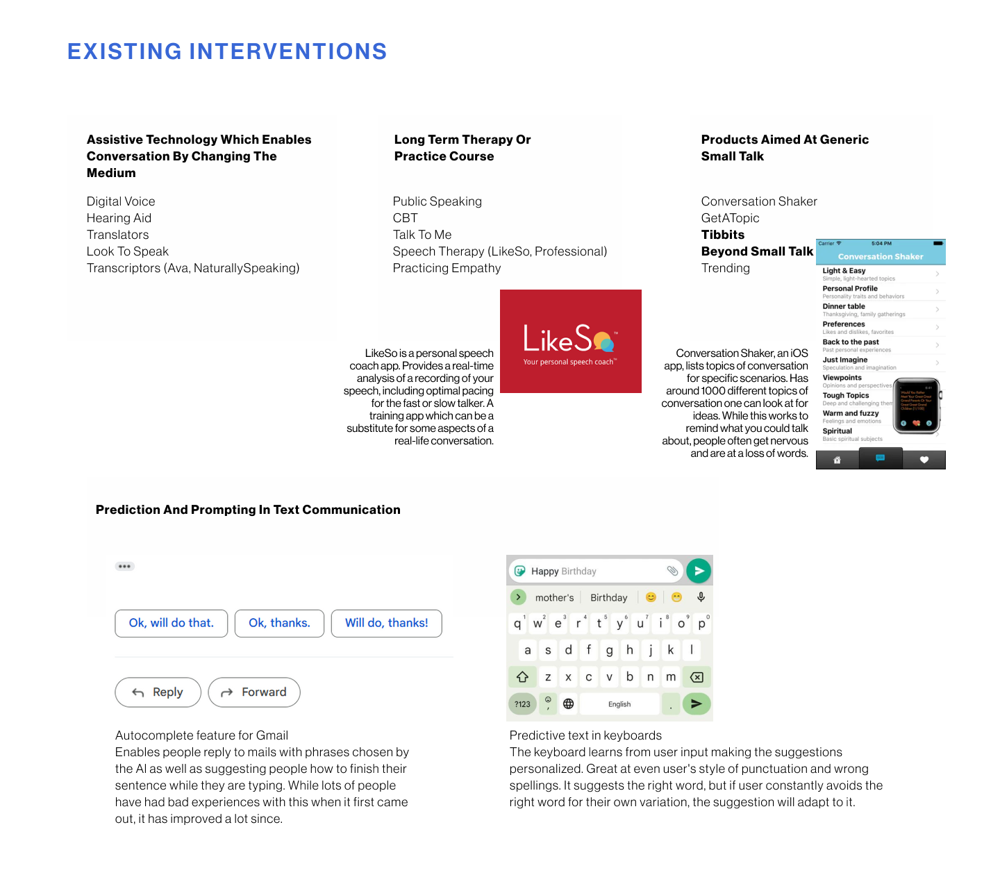
6. Core AI Design Tenets (Google PAIR)
Formulating system goals based on human-centered AI principles: unobtrusiveness, contextual adaptation, user privacy, retrospective explainability, and ongoing feedback.
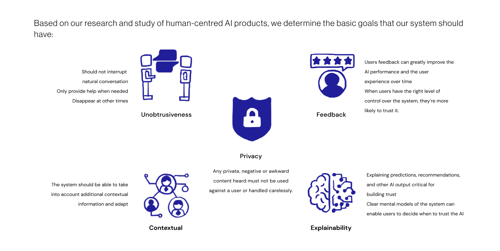
7. Low-Fidelity Wireframes & Layout Exploration
Iterative structural exploration of the mobile companion application and wearable notification cards.
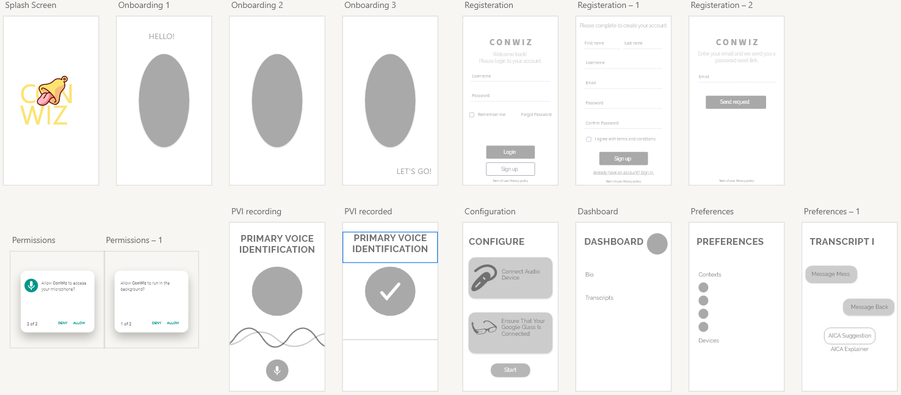
Critical Reflection
The Ethics of Algorithmic Rapport
Speculative design exists to stress-test technology before it becomes ubiquitous. Solely optimizing conversational AI for one individual carries significant societal risks:
The Asymmetrical Mirror: If an AI covertly analyzes conversation partners to maximize persuasion, it could build targeted psychological profiles of friends and colleagues. Over time, it could make fundamentally incompatible people appear harmonious, replacing genuine human rapport with synthetic manipulation.
The Surveillance Panopticon: Private face-to-face conversation is one of the last sanctuaries of unrecorded human thought. Centralizing spoken dialogue creates grave privacy risks. AICA demonstrates why conversation AI must process data strictly on-device, remain decentralized, and give users absolute sovereignty over their words.